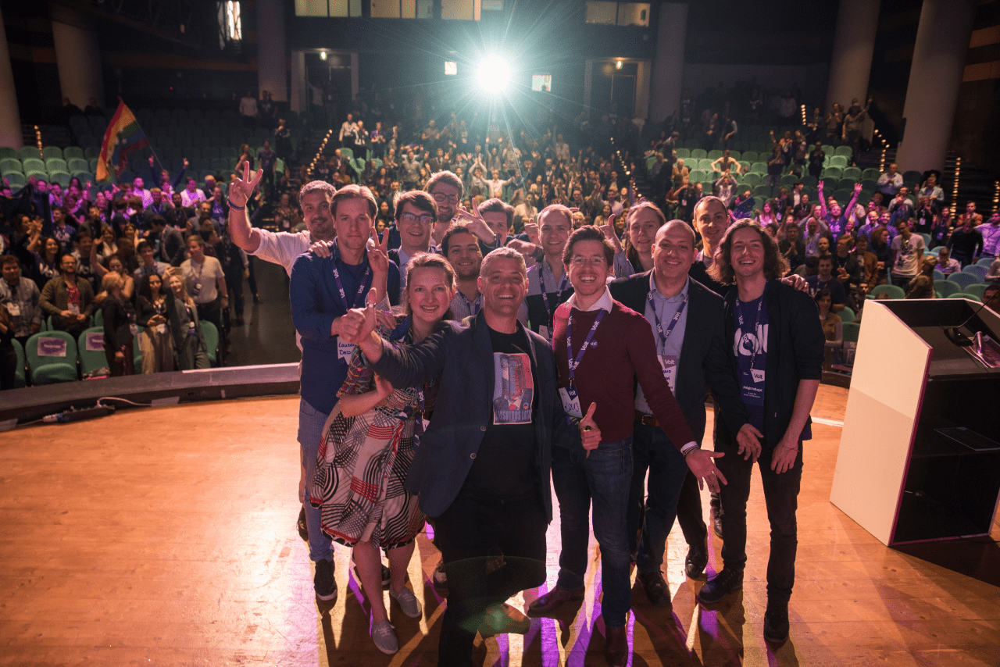

Devenir membre
Êtes-vous intéressé de rejoindre notre équipe et devenir membre ? Au-dessous vous trouverez certaines informations sur le processus et aussi ce que vous pouvez attendre lorsque vous adhérez.
Comment devenir membre ?
À devenir membre implique de rejoindre notre communauté européenne avec adhésion dans notre chapitre nationaux (Volt France) aussi bien que dans notre association Européenne (Volt Europa)
Nous avons un portail des membres, dans lequel vous pouvez enregistrer et demandez l'adhésion :
Go to volt.teamQu'est-ce que cela signifie d'être membre de Volt ?
Nous sommes une association de volontaires, qui travaille dans niveaux européens, nationaux (, régional) et locaux. Il y a amplement de choses pour s'occupe et des responsabilités à prendre dans tous les niveaux, de même qu'au niveau administratif et fonctionnel. Par exemple en développant et en contribuant des politiques dans l'équipe policy, en organisant des événements locals et en participant dans les événements des autres associations, en renforçant les efforts pour rendre nos systèmes de IT plus robuste et plus fiable, ou par onboarding de nouveaux membres. Notre hiérarchie est très horizontale. Nous aurons un système de buddies pour introduire les nouveaux Volters prochainement et nous organisons des calls thématiques hebdomadaires pour la présentation de notre workspace et l'un et l'autre. Après, vous êtes libre à découvrir et choisir vos intérêts, commencer à contribuer dans un projet ou apprendre à organiser une communauté et avec espoir impliquer les autres pour commencer à faire de la politique.
Aucune exigence écrite existe, mais nous espérons que membres se rendront disponibles quelques heures par semaines pour travailler dans leurs projets et avec leurs équipes.
En termes juridiques, d'être un membre implique que vous avez les droits de voter dans toutes décisions désignées pour un vote de membres dans votre niveau local, votre niveau national et à l'échelle européenne. Ces votes incluent par exemple l'évaluation d'une nouvelle policy, les votes administratifs pour les représentants régionaux et le bureau, le vote pour un groupe à rejoindre au parlement européen ou - plus simple - le vote pour la prochaine ville hôte de notre Assemblée Générale. Bien sur, comme membre vous êtes éligible pour toutes les positions à Volt.
Nous sommes en cours d'installer un système de cotisation qui sera le base à l'avenir pour votre droit de voter. Jusqu'à ce système est prêt, tous les membres officiels de Volt peuvent participer dans les votes.
Qu'est-ce que je peux faire, si je suis déjà membre d'une autre partie politique ou si je n'aime pas devenir membre ?
Volt est un mouvement ouvert. Nous nous occupons plus avec des enjeux que les couleurs politiques, donc vous êtes bienvenue de rejoindre un de nos équipes locales pour travailler avec nous tant que vous voulez. Nous apprécions le temps quelqu'un veut investir pour améliorer nos communautés et notre société. Chaque contribution compte pour nous. Si cependant- dans un certain moment - vous choisirez de devenir membre, vous devrez le faire sans une autre affiliation active avec une partie politique.
Quelles sont les étapes pour devenir un membre ?
Après avoir enregistré sur volt.team vous serez contacté par notre équipe RH afin de trouver une date pour un entretien. Si vous voulez bien avoir un peu de patience avec nous pour vous contacter - notre équipe RH sont aussi de volontaires pas disponible en plein temps. Merci.